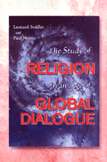

<body bgcolor="#FFFFFF" text="#000000" link="#0000FF" vlink="#CC0000" alink="#CC0000"><center><hr width="350" size="1" align="center" noshade>Answering questions about religion and its place in our lives and our world<hr width="350" size="1" align="center" noshade><p><a href="https://cdcshoppingcart.uchicago.edu/Cart/ChicagoBook.aspx?ISBN=9781566397926&&PRESS=temple" target="_top">Buy this book!</a> | <a href="https://cdcshoppingcart.uchicago.edu/Cart/Cart.aspx?PRESS=temple" target="_top">View Cart</a> | <a href="https://cdcshoppingcart.uchicago.edu/Cart/Cart.aspx?PRESS=temple" target="_top">Check Out</a></p><p></p></center><!--none//--><h1>The Study of Religion in an Age of Global Dialogue</h1>
<H2><!-- [Not an anthology!] --></H2>
<h3>Leonard Swidler and Paul Mojzes</h3>
<P>cloth 1-56639-792-8 $80.50, Sep 00, <FONT COLOR=#990033>Available</FONT>
<br>paper 1-56639-793-6 $29.95, Sep 00, <FONT COLOR=#990033>Available</FONT>
<BR> 240 pp
6x9
</P><BLOCKQUOTE><I>"[T]his study uniquely suggests...a dialogical approach to the study of religion and suggests a global ethnic as a viable beginning."</I>
<br>&#151<b>William Cenkner</b>, Katharine Drexel Professor of Religion, The Catholic University of America<I></I></BLOCKQUOTE>
<p>Religion is the most fundamental, comprehensive of all human activities. It tries to make sense out of not simply one or another aspect of human life, but of all aspects of human experience. At the core of every civilization lies its religion, which both reflects and shapes it. Thus, if we wish to understand human life in general and our specific culture and history, we need to understand religion.
<p>What is religion? Religion is an explanation of the ultimate meaning of life, and how to live accordingly; based on a notion of the Transcendent. Normally it contains the four "C's": Creed, Code, Cult, Community-structure.
<ul><p>
<li><p>CREED refers to the cognitive aspect of a religion; it is everything that goes into the "explanation" of the ultimate meaning of life.
<li><p>CODE OF BEHAVIOR, or ethics, includes all the rules and customs of action that somehow follow from one aspect or another of the Creed.
<li><p>CULT means all the ritual activities that relate the follower to one aspect or another of the Transcendent, either directly or indirectly, prayer being an example of the former and certain formal behavior toward representatives of the Transcendent, such as priests, of the latter.
<li><p>COMMUNITY-STRUCTURE refers to the relationships among the followers; this can vary widely, from a very egalitarian relationship, as among Quakers, through a "republican" structure as Presbyterians have, to a monarchical one, as with some Hasidic Jews have with their Rebbe.
<li><p>THE TRANSCENDENT, as the roots of the word indicate, means "that which goes beyond" the everyday, the ordinary, the surface experience of reality. It can mean spirits, gods, a Personal God, an Impersonal God, Emptiness, etc.
</ul>
<p>This volume looks at the ways we humans have developed to study religion. However, a new age in human consciousness is now dawning: The Age of Global Dialogue, a radically new consciousness which fundamentally shifts the ways we understand everything in life, including religion. This global dialogical way of understanding life does not lead to one global religion, but it does lead toward a consciously acknowledged common set of ethical principles, a Global Ethic. The book looks at these two movements&#151the Age of Global Dialogue and inchoative Global Ethic&#151in order to help readers understand what is going on around them, so they might make informed, intelligent decisions about the meaning of life and how to live it.
<BR>&nbsp;<h2>Reviews</h2>
<p><I>"Both dialogue and a global ethic have been discussed elsewhere, but linking them together and then combining them with the study of religion is this book's genuinely distinctive achievement. This accomplishment makes a major contribution to a singularly important discussion."</I>
<br>&#151<b>Walter Conn</b>, Professor of Theology and Religious Studies, Villanova University
<BR>&nbsp;<h2>Contents</h2><P>
<p>Introduction: The Study of Religion in an Age of Global Dialogue. Toward a Global Ethic in the Third Millennium
<br>1. What Is Religion?
<br>2. Philosophy of Religion
<br>3. History of Religions
<br>4. Scriptural Studies
<br>5. Evolution in Religion
<br>6. Anthropology and Sociology of Religion
<br>7. The Psychological Study of Religion
<br>8. The Relationship Between Religion and Economics
<br>9. Comparative Religion
<br>10. Phenomenology of Religion
<br>11. From the Age of Monologue to the Age of Global Dialogue
<br>12. Universal Declaration of a Global Ethic
<br>13. A Proposed Draft: A Universal Declaration of a Global Ethic
<br>Conclusion
</P><BR>&nbsp;<H2>About the Author(s)</H2>
<table><tr><td valign="top"><img src="/tempress/authors/1550_au1.gif" height="90" width="75"></td><td width="100%" valign="middle"><p><B>Leonard Swidler</B> is Professor of Religion at Temple University.</P></td></tr></table><P><b>Paul Mojzes</b> is Academic Dean and Professor of Religious Studies at Rosemount College.</P>
<BR><H2>Subject Categories</H2>
<p><A HREF="/tempress/religion.html" TARGET="_top">Religion</a>
<BR><A HREF="/tempress/philosophy.html" TARGET="_top">Philosophy and Ethics</a>
</p>
<p align="center"><a href="https://cdcshoppingcart.uchicago.edu/Cart/ChicagoBook.aspx?ISBN=9781566397926&&PRESS=temple" target="_top">Buy this book!</a> | <a href="https://cdcshoppingcart.uchicago.edu/Cart/Cart.aspx?PRESS=temple" target="_top">View Cart</a> | <a href="https://cdcshoppingcart.uchicago.edu/Cart/Cart.aspx?PRESS=temple" target="_top">Check Out</a></p><p><font face="Arial" size="1"><a href="copyright.html" onMouseOver="window.status='Web Copyright Policy';return true;" onMouseOut="window.status=''" title="Web Copyright Policy">&copy;</a> 2015 <a href="http://www.temple.edu" target="new" onMouseOver="window.status='Link to Temple University home page';return true;" onMouseOut="window.status=''" title="Link to Temple University home page">Temple University</a>. All Rights Reserved. http://www.temple.edu/tempress/titles/1550_reg.html</font></p>